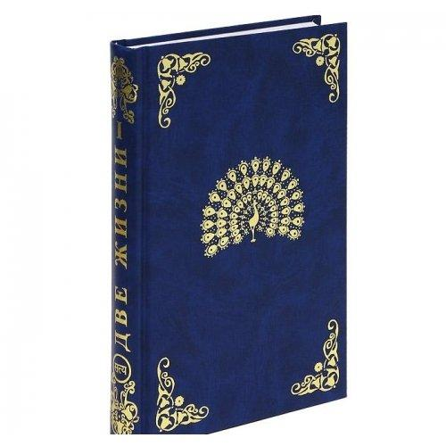

«Two Lives» by Concordia Antarova
Introduction
About Concordia Antarova
About “Two Lives”
Credits
1
“TWO LIVES”, Part (Translation from Russian)
2
Chapter 1: At my brother’s
3
Chapter 2: The feast at Ali’s
4
Chapter 3 : Lord Benedict and a journey to Ali’s house in the country
5
Chapter 4: I become the dervish
6
Chapter 5: I am playing a servant interpreter
7
Chapter 6: We don’t come up to K.
8
Chapter 7: New friends
9
Chapter 8: One more sore disappointment and departure from Moscow
10
Chapter 9: We are going to Sevastopol
11
Chapter 10: In Sevastopol
12
Chapter 11: On the ship
13
Chapter 12: The storm in the sea
14
Chapter 13: The unfamiliar lady from the cabin No. 1A of the hospital
15
Chapter 14: Stop in B. and unexpected impressions in it
16
Chapter 15: We are sailing to Constantinople
17
Chapter 16: In Constantinople
18
Chapter 17: The new life of Joan and the duke
19
Chapter 18: The dinner at Stroganoffs’
20
“ДВЕ ЖИЗНИ”, Часть I. Том 1 (Original in Russian)
20.1
Глава 1. У МОЕГО БРАТА
20.2
Глава 2. ПИР У АЛИ
20.3
Глава 3. ЛОРД БЕНЕДИКТ И ПОЕЗДКА НА ДАЧУ АЛИ
20.4
Глава 4. ПРЕВРАЩЕНИЕ В ДЕРВИША
20.5
Глава 5. Я В РОЛИ СЛУГИ ПЕРЕВОДЧИКА
20.6
Глава 6. МЫ НЕ ДОЕЗЖАЕМ ДО К.
20.7
Глава 7. НОВЫЕ ДРУЗЬЯ
20.8
Глава 8. ЕЩЕ ОДНО ГОРЬКОЕ РАЗОЧАРОВАНИЕ И ОТЪЕЗД ИЗ МОСКВЫ
20.9
Глава 9. МЫ ЕДЕМ В СЕВАСТОПОЛЬ
20.10
Глава 10. В СЕВАСТОПОЛЕ
20.11
Глава 11. НА ПАРОХОДЕ
20.12
Глава 12. БУРЯ НА МОРЕ
20.13
Глава 13. НЕЗНАКОМКА ИЗ КАЮТЫ “1А”
20.14
Глава 14. СТОЯНКА В Б. И
20.15
Глава 15. МЫ ПЛЫВЕМ В КОНСТАНТИНОПОЛЬ
20.16
Глава 17. НАЧАЛО НОВОЙ ЖИЗНИ ЖАННЫ И КНЯЗЯ
20.17
Глава 18. ОБЕД У СТРОГАНОВЫХ
21
Text Analysis
Most frequently used words
About Love vs. about Life
IVIM Inc. (CC) 2018
«Two Lives» by Concordia Antarova
1
“TWO LIVES”, Part (Translation from Russian)
